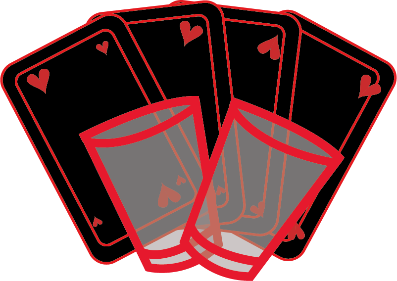
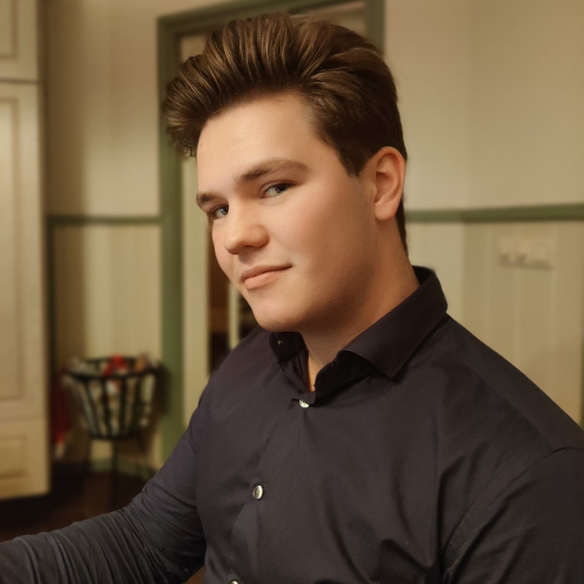

Over Mij
Projecten
CV

Over mij
Welkom op mijn portfolio site.
Mijn naam is Jacques Raaijmakers, ik ben in opleiding als software developer. Ik zit momenteel in mijn tweede jaar op het Sintlucas Eindhoven.